1. Høyreklikk på siden og velg oversett til engelsk
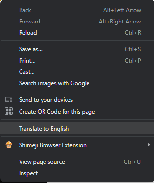1. Begynn med å lage brukeren med adduser kommandoen
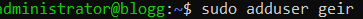2. Lag passordet til brukeren og følg stegene som kommer opp. Fyll inn informasjonen den ber om eller la den være tom.
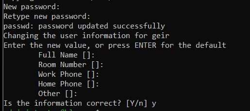3. Logg inn på den nye brukeren med su kommandoen
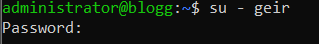4. Generer public ssh key
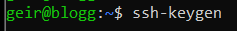5. La nøkkelen lagres i default mappen og lag et passphrase om du vil (du kan la den være tom)
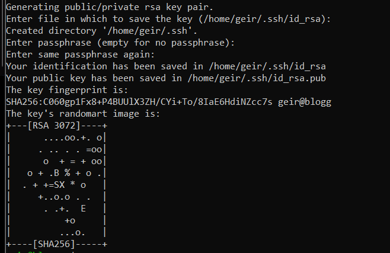6. Gå inn i ssh mappen og rediger authorized_keys. inni authoized_keys kopierer du inn public keyen til brukeren som skal kunne logge seg på. Trykk ctrl + O for å lagre edringene og ctrl + X for å gå ut av filen.
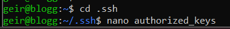7. Skriv logout for å logge ut av brukeren
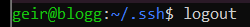8. Bruk usermod for å redigere rettighetene til brukeren. Du kan sjekke om det funker ved å skrive groups og brukernavnet for å se hvilke grupper brukeren er en del av. På bilde ser vi at geir brukeren har blitt lagt til i sudo gruppen
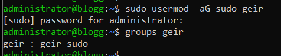1. Lag mappen som du vil ha prosjektet i. Gå inn i mappen du akkuratt lagde og åpne et kode program.
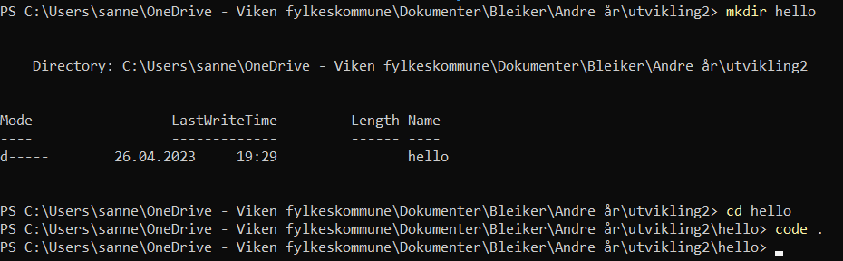2. Lag en liten kode som logger noe til terminalen.
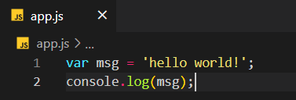3. Åpne en terminal.
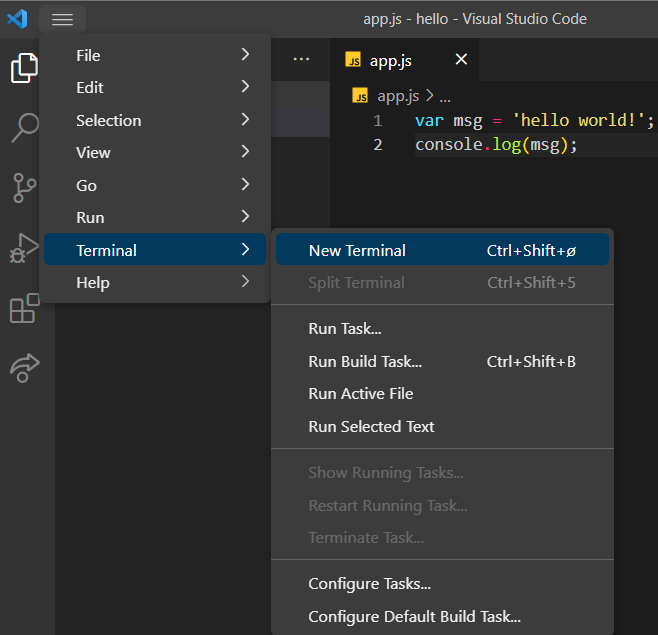4. Skriv inn node kommandoen og navnet på javascript filen for å kjøre scriptet. Her ser vi at det funker ved at vi får skrevet ut beskjeden vår.
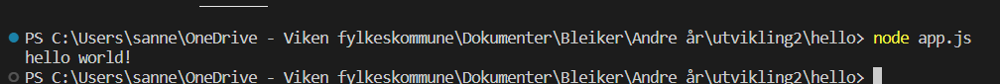